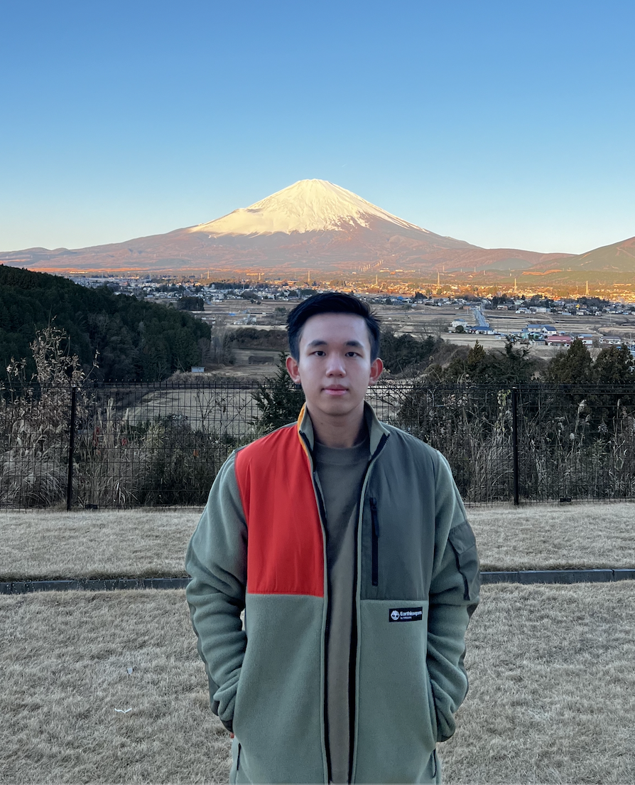

Profile

Hi, my name is William Josh Limantara. I'm currently a second year
Computer Science student studying in
UNSW.
Hardworking individual who is ready to utilize his knowledge and
skills to further the mission of the company. Technologically adept,
critical thinker, good interpersonal skills and unafraid to bring
positive attitude in tackling new challenges to become a dependable
team member.
Hobby
- Table Tennis
- Badminton
- Watching Movies
Working Experience
Assistant, The Print Facility, Sydney
- Assist with stocking shelves, unloading merchandise and organizing inventory for a series of upcoming orders to be done.
- Set priorities based on the deadlines of multiple orders and discuss on the distribution of task as a team.
- Assembled finished product which includes putting together of inventories such as printable items and disks as well as discarding invalid items.
Languages
- Indonesian
- English
- Chinese